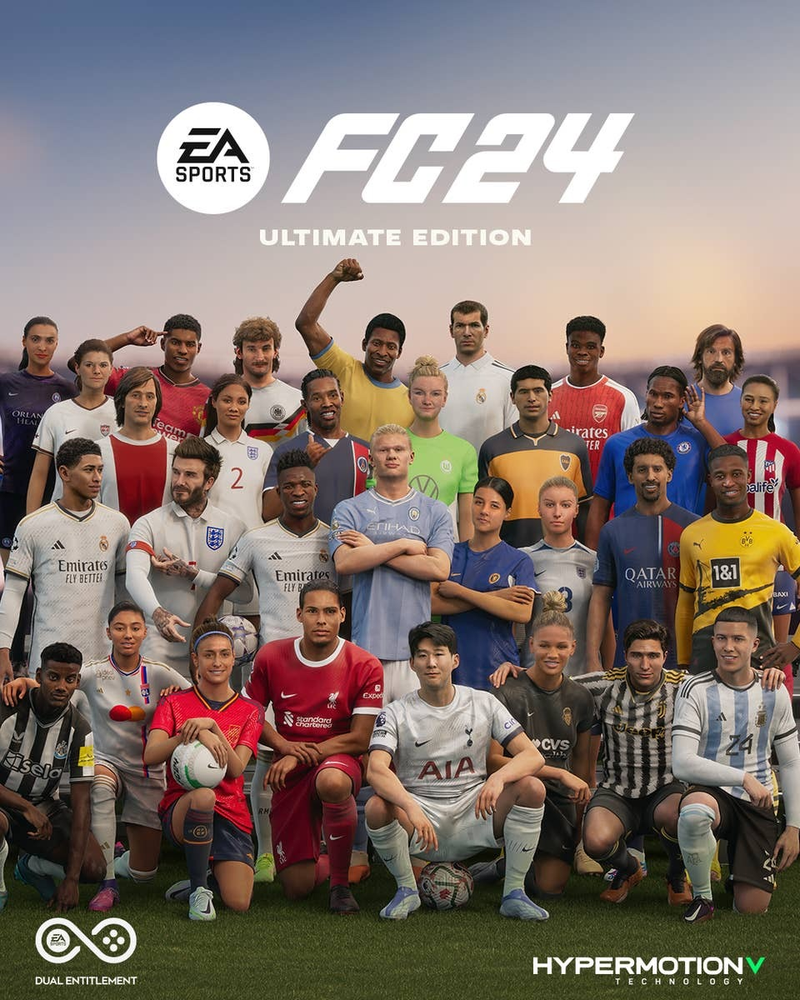

Oyun Hakkında
Tür: Futbol Simülasyonu
Çıkış Tarihi: 29 Eylül 2023
Metascore: 75
Açıklama: EA Sports FC 24 yeni bir futbol video oyunudur. EA Vancouver ve EA Romania tarafından geliştirildi ve EA Sports tarafından yayınlandı. EA'nın FIFA ile ortaklığının sona ermesinin ardından EA Sports FC serisinin açılış oyunu olarak EA Sports tarafından geliştirilen oyun, 29 Eylül 2023 tarihinde Nintendo Switch, PlayStation 4, PlayStation 5, Windows, Xbox One ve Xbox Series X/S için dünya çapında piyasaya sürülmüştür. Oyunda bir önceki HyperMotion 2 teknolojisinin bir üst versiyonu HyperMotionV teknolojisi kullanıyor. PlayStation 5, Xbox Series X|S ve oyunun bilgisayar sürümleri çapraz platform aracılığıyla oynanabilecektir. PlayStation 4 ve Xbox One sürümlerinin çapraz platformda oynanabilecek. Oyunun Nintendo Switch sürümü ise çapraz platform desteklememektedir. Oyunun tanıtım filminde FIFA 14'te kullanılan müziklerden birisi olan Love Me Again kullanıldı.
Ekran Görüntüleri
